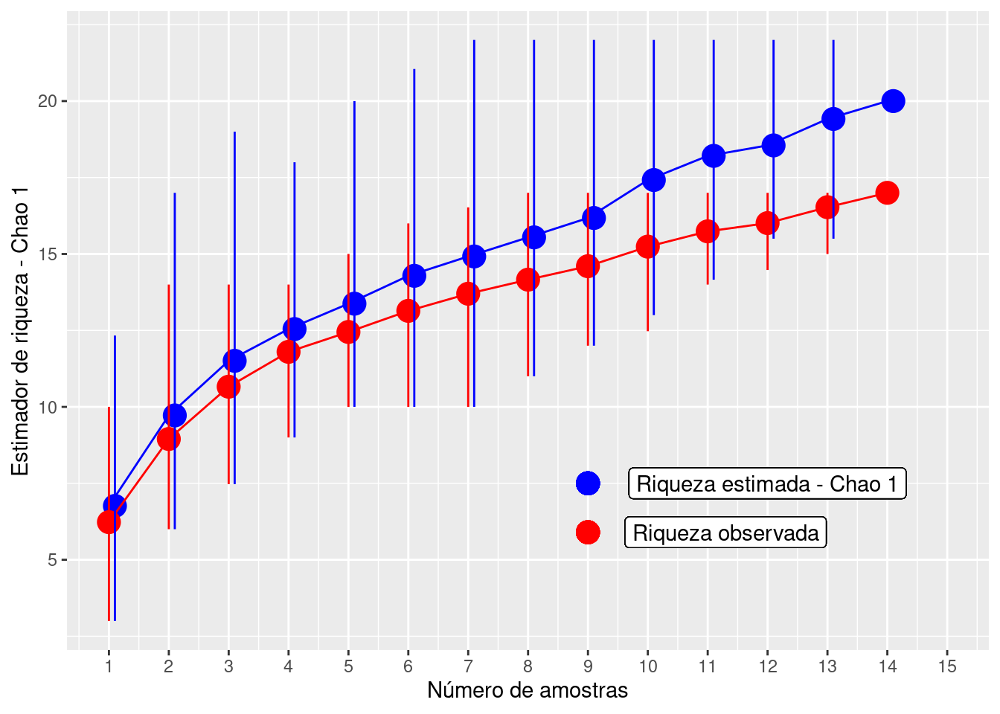
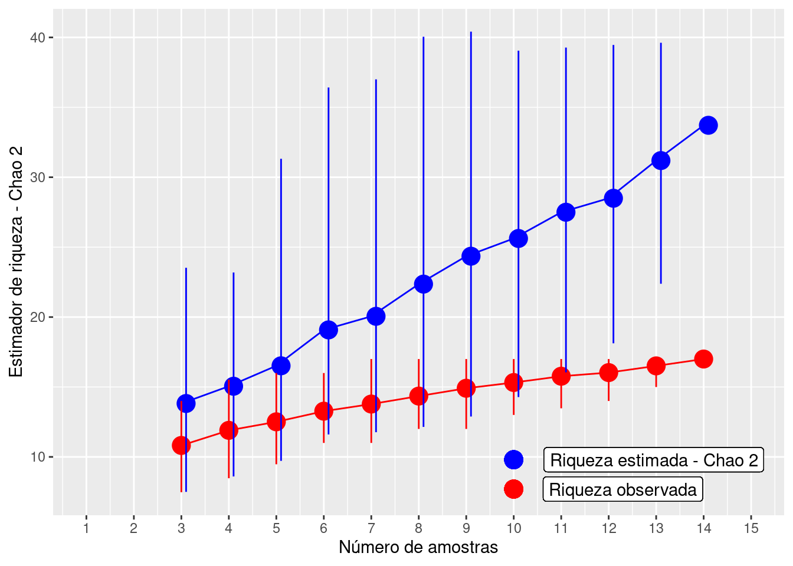
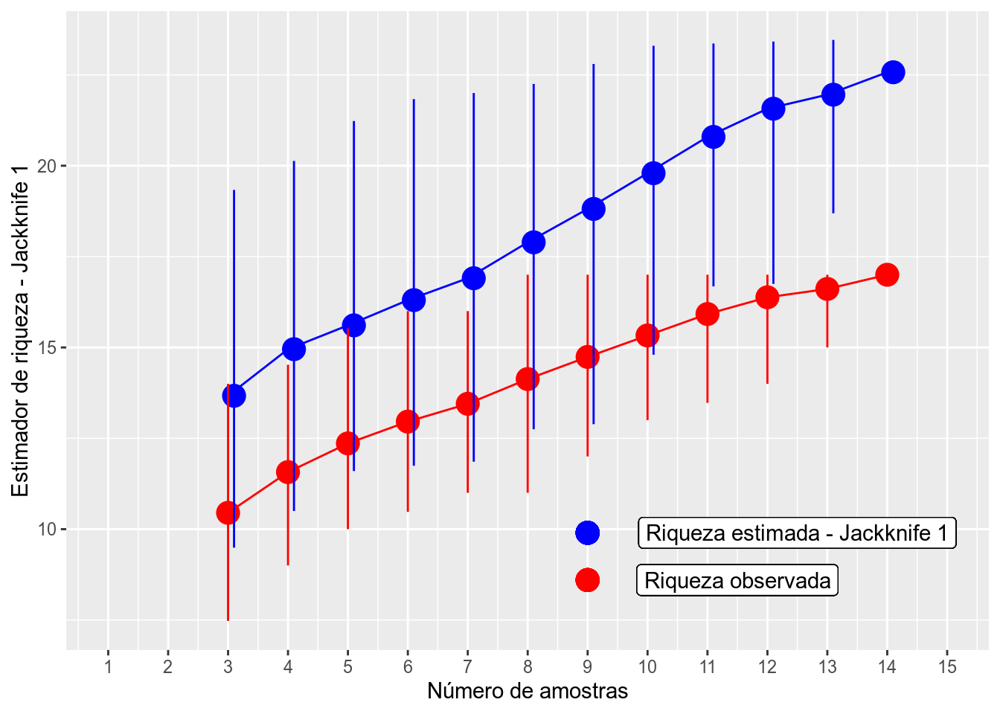

Capítulo 3 Estimadores de Riqueza
3.1 Backgorund da análise
Uma vez que determinar o número total de espécies numa área é praticamente impossível, principalmente em regiões com alta riqueza de espécies, os estimadores são úteis para extrapolar a riqueza observada e tentar estimar a riqueza total através de uma amostra incompleta de uma comunidade biológica (Walther & Moore 2005). Neste capítulo serão considerados os estimadores não paramétricos que usam informações da frequencia de espécies raras na comunidade (Gotelli & Chao 2013). Isto porque tanto os testes paramétricos que tentam determinar os parâmetros de uma curva usando o formato da curva de acumulação de espécies (e.g. equação logística, Michaelis-Menten) quanto os testes que usam a frequencia do número de indivíduos para enquadrá-las em uma das distribuições de abundância das espécies (e.g. distribuições log-séries, log-normal) não funcionam muito bem com dados empíricos (Gotelli & Chao 2013). Para mais detalhes sobre os testes paramétricos veja Magurran (2004) e Colwell (2019).
3.1 Quatro características para um bom estimador de riqueza (Chazdon et al. 1998; Horter et al. 2006):
- Independência do tamanho da amostra (quantidade de esforço amostral realizado);
- Insensibilidade a diferentes padrões de distribuições (diferentes equitabilidades);
- Insensibilidade em relação à ordem das amostragens;
- Insensibilidade à heterogeneidade entre as amostras usadas entre estudos.
3.2 Estimadores baseados na abundância das espécies
3.2.1 CHAO 1 - (Chao 1984, 1987):
Estimador simples do número absoluto de espécies em uma comunidade. É baseado no número de espécies raras dentro de uma amostra.
\[Chao_{1} = S_{obs} + \left(\frac{n-1}{n}\right)\frac{F_1(F_1-1)}{2(F_2+1)}\]
onde:
Sobs = o número de espécies na comunidade,
n = número de amostras,
F1 = número de espécies observadas com abundância de um indivíduo (espécies singleton),
F2 = número de espécies observadas com abundância de dois indivíduos (espécies doubletons).
O valor de Chao 1 é máximo quando todas as espécies menos uma são únicas (singleton). Neste caso, a riqueza estimada é aproximadamente o dobro da riqueza observada.
3.2.1.1 Exemplo prático - Chao 1
3.2.1.1.1 Explicação dos dados
Neste exemplo usaremos os dados de 17 espécies de anuros amostradas em 14 dias de coletas de campo em um habitat reprodutivo localizado na região noroeste do estado de São Paulo, Brasil.
Pergunta:
Quantas espécies a mais poderiam ser amostradas caso aumentasse o esforço amostral?
Predições
- O número de espécies estimadas é similar ao número de espécies observada;
- O número de espécies estimadas é maior do que o número de espécies observada.
Variáveis
- Variáveis preditoras
- matriz ou vetor com as abundâncias das espécies de anuros registradas em uma habitat reprodutivo
Checklist
- Verificar se a sua matriz está com as espécies nas colunas e as amostragens nas linhas
- Verificar se os dados são de abundância e não presença e ausência
3.2.2 Análise
Calculo do estimador de riqueza - Chao 1
library(ecodados)
library(vegan)
dados_coleta <- poca_anuros
est_chao1 <- estaccumR(dados_coleta, permutations = 100)
summary(est_chao1, display = "chao")## $chao
## N Chao 2.5% 97.5% Std.Dev
## Dia_1 1 6.54500 3.0000 12.33333 2.548063
## Dia_5 2 10.04867 4.9500 20.00000 3.622670
## Dia_12 3 11.57333 6.4750 18.00000 2.830938
## Dia_3 4 12.77000 8.0000 20.00000 2.923696
## Dia_9 5 13.70083 10.0000 20.00000 2.760453
## Dia_14 6 14.12833 11.0000 20.00000 2.481679
## Dia_11 7 15.07833 11.4750 22.00000 2.845483
## Dia_2 8 15.77500 12.0000 22.00000 2.643882
## Dia_10 9 16.40333 12.4750 22.00000 2.684618
## Dia_7 10 17.42500 13.0000 22.00000 2.851878
## Dia_6 11 18.17500 14.7375 22.00000 2.491779
## Dia_13 12 18.85000 15.5000 22.00000 2.303379
## Dia_4 13 19.34000 15.5000 22.00000 1.634353
## Dia_8 14 20.00000 20.0000 20.00000 0.000000
##
## attr(,"class")
## [1] "summary.poolaccum"Visualizar os resultados com intervalo de confiança de 95%.
library(ggplot2)
# preparando os dados para fazer o gráfico
resultados <- summary(est_chao1, display = c("S", "chao"))
res_chao <- cbind(resultados$chao[,1:4], resultados$S[,2:4])
res_chao <- as.data.frame(res_chao)
colnames(res_chao) <- c("Amostras", "Chao", "C_inferior", "C_superior", "Riqueza",
"R_inferior", "R_superior")
# comando para o gráfico
ggplot(res_chao, aes(y = Riqueza, x = Amostras)) +
geom_point(aes(y = Chao, x = Amostras + 0.1), size = 5, color = "blue", alpha = 1) +
geom_point(aes(y = Riqueza, x = Amostras), size = 5, color = "red", alpha = 1) +
geom_line (aes(y = Chao, x = Amostras), color = "blue") +
geom_line (aes(y = Riqueza, x = Amostras), color = "red") +
geom_linerange(aes(ymin = C_inferior, ymax = C_superior, x = Amostras + 0.1),
color = "blue") +
geom_linerange(aes(ymin = R_inferior, ymax = R_superior, x = Amostras), color = "red") +
ylab ("Estimador de riqueza - Chao 1") +
xlab ("Número de amostras") +
scale_x_continuous(limits = c(1,15), breaks=seq(1,15,1)) +
geom_point(y= 7.5, x = 9, size = 5, color = "blue", alpha = 1) +
geom_point(y= 5.9, x = 9, size = 5, color = "red", alpha = 1) +
geom_label( y = 7.5, x = 12, label = "Riqueza estimada - Chao 1") +
geom_label( y = 5.9, x = 11.3, label = "Riqueza observada")
3.2.2.1 Interpretação dos resultados
Com base no número de espécies raras (singletons e doubletons), o estimador Chao 1 indica a possibilidade de encontrarmos mais três espécies caso o esforço amostral fosse maior e não mostra tendência de estabilização da curva em uma assíntota.
3.2.3 ACE - Abundance-based Coverage Estimador (Chao & Lee 1992, Chao et al. 2000):
Este método trabalha com a abundância das espécies raras (i.e. abundância baixa). Entretanto, diferente do estimador anterior, esse método permite ao pesquisador determinar os limites para os quais uma espécie seja considerada rara. Em geral, são consideradas raras espécies com abundância entre 1 e 10 indivíduos. A riqueza estimada pode variar conforme se aumente ou diminua o limiar de abundância, e infelizmente não existem critérios biológicos definidos para a escolha do melhor intervalo.
\[ACE = S_{abund} + \frac{S_{rare}}{C_{ace}} + \frac{F_1}{C_{ace}}Y_{ace}^2\]
onde:
\[Y_{ace}^2 = max \left[\frac{S_{rare}}{C_{ace}}\frac{\sum_{i=i}^{10}i(i-1)F1}{(N_{rare})({N_{rare} - 1)}}-1,0\right]\]
\[C_{ace} = 1 - \frac{F1}{N_{rare}}\]
\[N_{rare} = \sum_{i=1}^{10}iF_i\]
Não precisa fazer cara feia, é óbvio que iremos usar o programa para fazer esses cálculos.
3.2.3.1 Exemplo prático - ACE
3.2.3.1.1 Explicação dos dados
Usaremos os mesmos dados de 17 espécies de anuros amostradas em 14 dias de coletas de campo em um habitat reprodutivo localizado na região noroeste do estado de São Paulo, Brasil.
Pergunta:
Quantas espécies a mais poderiam ser amostradas caso aumentasse o esforço amostral?
Predições
- O número de espécies estimadas é similar ao número de espécies observada;
- O número de espécies estimadas é maior do que o número de espécies observada.
Variáveis
- Variáveis preditoras
- matriz ou vetor com as abundâncias das espécies de anuros registradas em uma habitat reprodutivo
Checklist
- Verificar se a sua matriz está com as espécies nas colunas e as amostragens nas linhas
- Verificar se os dados são de abundância e não presença e ausência
3.2.4 Análise
Calculo do estimador de riqueza - ACE
library(vegan)
dados_coleta <- poca_anuros
est_ace <- estaccumR(dados_coleta, permutations = 100)
summary(est_ace, display = "ace")## $ace
## N ACE 2.5% 97.5% Std.Dev
## Dia_7 1 7.918186 3.545190 13.71429 2.941437
## Dia_1 2 10.607847 6.000000 18.44439 3.215413
## Dia_14 3 12.151271 8.000000 18.06293 2.738382
## Dia_13 4 12.998740 9.000000 18.33450 2.449547
## Dia_12 5 13.901368 9.179113 19.95381 2.613577
## Dia_5 6 14.845191 11.306242 20.19020 2.461985
## Dia_3 7 15.698225 11.708245 21.56195 2.597982
## Dia_2 8 16.715806 11.907956 22.34839 2.702704
## Dia_8 9 17.915052 12.878571 24.60822 3.231746
## Dia_4 10 19.642234 13.473974 25.72368 3.718665
## Dia_11 11 21.313326 14.083641 25.72368 3.647967
## Dia_9 12 22.874868 17.238095 25.72368 3.118468
## Dia_6 13 24.002859 17.676471 25.72368 2.286386
## Dia_10 14 24.703704 24.703704 24.70370 0.000000
##
## attr(,"class")
## [1] "summary.poolaccum"Visualizar os resultados com intervalo de confiança de 95%
library(ggplot2)
# preparando os dados para fazer o gráfico
resultados_ace <- summary(est_ace, display = c("S", "ace"))
res_ace <- cbind(resultados_ace$ace[,1:4], resultados_ace$S[,2:4])
res_ace <- as.data.frame(res_ace)
colnames(res_ace) <- c("Amostras", "ACE", "ACE_inferior", "ACE_superior", "Riqueza",
"R_inferior", "R_superior")
# comando para o gráfico
ggplot(res_ace, aes(y = Riqueza, x = Amostras)) +
geom_point(aes(y = ACE, x = Amostras + 0.1), size = 5, color = "blue", alpha = 1) +
geom_point(aes(y = Riqueza, x = Amostras), size = 5, color = "red", alpha = 1) +
geom_line (aes(y = ACE, x = Amostras), color = "blue") +
geom_line (aes(y = Riqueza, x = Amostras), color = "red") +
geom_linerange(aes(ymin = ACE_inferior, ymax = ACE_superior, x = Amostras + 0.1),
color = "blue") +
geom_linerange(aes(ymin = R_inferior, ymax = R_superior, x = Amostras), color = "red") +
ylab ("Estimador de riqueza - ACE") +
xlab ("Número de amostras") +
scale_x_continuous(limits = c(1,15), breaks=seq(1,15,1)) +
geom_point(y= 7.5, x = 9, size = 5, color = "blue", alpha = 1) +
geom_point(y= 5.9, x = 9, size = 5, color = "red", alpha = 1) +
geom_label( y = 7.5, x = 11.7, label = "Riqueza estimada - ACE") +
geom_label( y = 5.9, x = 11.3, label = "Riqueza observada")
3.2.4.1 Interpretação dos resultados
Com base no número de espécies raras (abundância menor que 10 indivíduos - default), o estimador ACE indica a possibilidade de encontrarmos mais sete espécies caso o esforço amostral fosse maior e não mostrou tendência de estabilição da curva em uma assíntota.
3.3 Estimadores baseados na incidência das espécies
3.3.1 CHAO 2 - (Chao 1987):
De acordo com Anne Chao, o estimador Chao 1 pode ser modificado para uso com dados de presença/ausência levando em conta a distribuição das espécies entre amostras. Neste caso é necessário somente conhecer o número de espécies encontradas em somente uma amostra e o número de espécies encontradas exatamente em duas amostras. Essa variação ficou denominada como Chao 2:
\[Chao_{2} = S_{obs} + \left(\frac{m-1}{m}\right)\left(\frac{Q_1(Q_1-1)}{2(Q_2 + 1}\right)\]
onde:
Sobs = o número de espécies na comunidade,
m = número de amostragens,
Q1 = número de espécies observadas em uma amostragem (espécies uniques),
Q2 = número de espécies observadas em duas amostragens (espécies duplicates).
O valor de Chao2 é máximo quando as espécies menos uma são únicas (uniques). Neste caso, a riqueza estimada é aproximadamente o dobro da riqueza observada. Colwell & Coddington (1994) encontraram que o valor de Chao 2 mostrou ser o estimador menos enviesado para amostras com tamanho pequeno.
3.3.1.1 Exemplo prático - Chao 2
3.3.1.1.1 Explicação dos dados
Usaremos os mesmos dados de 17 espécies de anuros amostradas em 14 dias de coletas de campo em um habitat reprodutivo localizado na região noroeste do estado de São Paulo, Brasil.
Pergunta:
Quantas espécies a mais poderiam ser amostradas caso aumentasse o esforço amostral?
Predições
- O número de espécies estimadas é similar ao número de espécies observada;
- O número de espécies estimadas é maior do que o número de espécies observada.
Variáveis
- Variáveis preditoras
- matriz ou vetor com a incidência das espécies de anuros registradas em uma habitat reprodutivo
Checklist
- Verificar se a sua matriz está com as espécies nas colunas e as amostragens nas linhas
3.3.2 Análise
Calculo do estimador de riqueza - Chao 2
library(vegan)
dados_coleta <- poca_anuros
est_chao2 <- poolaccum(dados_coleta, permutations = 100)
summary(est_chao2, display = "chao")## $chao
## N Chao 2.5% 97.5% Std.Dev
## [1,] 3 14.51931 7.650000 30.08750 6.212223
## [2,] 4 15.15887 9.151563 24.61406 4.474168
## [3,] 5 16.45343 9.260000 31.84500 6.011798
## [4,] 6 18.21479 9.416667 34.55625 6.415490
## [5,] 7 19.46107 10.316071 35.57500 6.331631
## [6,] 8 21.70490 12.809375 40.04531 7.120572
## [7,] 9 23.49481 12.888889 38.77778 7.232789
## [8,] 10 25.31950 13.800000 39.05000 7.173407
## [9,] 11 27.15636 17.090909 39.27273 6.812539
## [10,] 12 29.90563 21.333333 39.45833 5.726458
## [11,] 13 32.24385 22.384615 39.61538 4.406895
## [12,] 14 33.71429 33.714286 33.71429 0.000000
##
## attr(,"class")
## [1] "summary.poolaccum"Visualizar os resultados com intervalo de confiança de 95%
library(ggplot2)
# preparando os dados para fazer o gráfico
resultados_chao2 <- summary(est_chao2, display = c("S", "chao"))
res_chao2 <- cbind(resultados_chao2$chao[,1:4], resultados_chao2$S[,2:4])
res_chao2 <- as.data.frame(res_chao2)
colnames(res_chao2) <- c("Amostras", "Chao2", "C_inferior", "C_superior", "Riqueza",
"R_inferior", "R_superior")
# comando para o gráfico
ggplot(res_chao2, aes(y = Riqueza, x = Amostras)) +
geom_point(aes(y = Chao2, x = Amostras + 0.1), size = 5, color = "blue", alpha = 1) +
geom_point(aes(y = Riqueza, x = Amostras), size = 5, color = "red", alpha = 1) +
geom_line (aes(y = Chao2, x = Amostras), color = "blue") +
geom_line (aes(y = Riqueza, x = Amostras), color = "red") +
geom_linerange(aes(ymin = C_inferior, ymax = C_superior, x = Amostras + 0.1),
color = "blue") +
geom_linerange(aes(ymin = R_inferior, ymax = R_superior, x = Amostras), color = "red") +
ylab ("Estimador de riqueza - Chao 2") +
xlab ("Número de amostras") +
scale_x_continuous(limits = c(1,15), breaks=seq(1,15,1)) +
geom_point(y= 9.8, x = 10, size = 5, color = "blue", alpha = 1) +
geom_point(y= 7.7, x = 10, size = 5, color = "red", alpha = 1) +
geom_label( y = 9.8, x = 12.95, label = "Riqueza estimada - Chao 2") +
geom_label( y = 7.7, x = 12.3, label = "Riqueza observada")
3.3.2.1 Interpretação dos resultados
Com base no número de espécies raras (uniques e duplicates), Chao 2 estimou a possibilidade de encontrarmos mais dezesseis espécies caso o esforço amostral fosse maior e não mostrou tendência de estabilização da curva em uma assíntota.
3.3.3 JACKKNIFE 1 (Burnham & Overton 1978, 1979):
Este estimador baseia-se no número de espécies que ocorrem em somente uma amostra (Q1).
\[S_{jack1} = S_{obs} + Q1\left(\frac{m - 1}{m}\right)\]
onde:
Sobs = o número de espécies na comunidade,
Q1 = número de espécies observadas em uma amostragem (espécies uniques),
m = número de amostragens.
Palmer (1990) verificou que Jackknife 1 foi o estimador mais preciso e menos enviesado comparado a outros métodos de extrapolação.
3.3.3.1 Exemplo prático - Jackknife 1
3.3.3.1.1 Explicação dos dados
Usaremos os mesmos dados de 17 espécies de anuros amostradas em 14 dias de coletas de campo em um habitat reprodutivo localizado na região noroeste do estado de São Paulo, Brasil.
Pergunta:
Quantas espécies a mais poderiam ser amostradas caso aumentasse o esforço amostral?
Predições
- O número de espécies estimadas é similar ao número de espécies observada;
- O número de espécies estimadas é maior do que o número de espécies observada.
Variáveis
- Variáveis preditoras
- matriz ou vetor com as abundâncias das espécies de anuros registradas em uma habitat reprodutivo
Checklist
- Verificar se a sua matriz está com as espécies nas colunas e as amostragens nas linhas
3.3.4 Análise
Calculo do estimador de riqueza - Jackknife 1
library(vegan)
dados_coleta <- poca_anuros
est_jack1 <- poolaccum(dados_coleta, permutations = 100)
summary(est_jack1, display = "jack1")## $jack1
## N Jackknife 1 2.5% 97.5% Std.Dev
## [1,] 3 13.55000 8.666667 19.33333 2.779747
## [2,] 4 14.69000 9.750000 20.64375 2.875822
## [3,] 5 15.80800 10.600000 20.60000 2.893102
## [4,] 6 16.52833 10.833333 21.35833 2.849189
## [5,] 7 17.33571 12.714286 22.93214 2.740579
## [6,] 8 18.07875 14.165625 22.25000 2.488589
## [7,] 9 18.82667 14.719444 23.22222 2.369335
## [8,] 10 19.75400 14.800000 23.30000 2.512451
## [9,] 11 20.59091 14.818182 23.36364 2.412246
## [10,] 12 21.19500 16.750000 23.41667 2.183765
## [11,] 13 22.03308 18.692308 23.46154 1.288434
## [12,] 14 22.57143 22.571429 22.57143 0.000000
##
## attr(,"class")
## [1] "summary.poolaccum"Visualizar os resultados com 95% intervalo de confiança
library(ggplot2)
# preparando os dados para fazer o gráfico
resultados_jack1 <- summary(est_jack1, display = c("S", "jack1"))
res_jack1 <- cbind(resultados_jack1$jack1[,1:4], resultados_jack1$S[,2:4])
res_jack1 <- as.data.frame(res_jack1)
colnames(res_jack1) <- c("Amostras", "JACK1", "JACK1_inferior", "JACK1_superior", "Riqueza",
"R_inferior", "R_superior")
# comando para o gráfico
ggplot(res_jack1, aes(y = Riqueza, x = Amostras)) +
geom_point(aes(y = JACK1, x = Amostras + 0.1), size = 5, color = "blue", alpha = 1) +
geom_point(aes(y = Riqueza, x = Amostras), size = 5, color = "red", alpha = 1) +
geom_line (aes(y = JACK1, x = Amostras), color = "blue") +
geom_line (aes(y = Riqueza, x = Amostras), color = "red") +
geom_linerange(aes(ymin = JACK1_inferior, ymax = JACK1_superior, x = Amostras + 0.1),
color = "blue") +
geom_linerange(aes(ymin = R_inferior, ymax = R_superior, x = Amostras), color = "red") +
ylab ("Estimador de riqueza - Jackknife 1") +
xlab ("Número de amostras") +
scale_x_continuous(limits = c(1,15), breaks=seq(1,15,1)) +
geom_point(y= 9.9, x = 9, size = 5, color = "blue", alpha = 1) +
geom_point(y= 8.6, x = 9, size = 5, color = "red", alpha = 1) +
geom_label( y = 9.9, x = 12.5, label = "Riqueza estimada - Jackknife 1") +
geom_label( y = 8.6, x = 11.5, label = "Riqueza observada")
3.3.4.1 Interpretação dos resultados
Com base no número de espécies raras, o estimador Jackknife 1 calculou a possibilidade de encontrarmos mais seis espécies caso o esforço amostral fosse maior e não mostrou tendência de estabilização da curva em uma assíntota.
3.3.5 JACKKNIFE 2 (Burnham & Overton 1978, 1979, Palmer 1991):
Este método basea-se no número de espécies que ocorrem em apenas uma amostra e no número de espécies que ocorrem em exatamente duas amostras.
\[S_{jack2} = S_{obs} + \left[\frac{Q_1(2m - 3)}{m}-\frac{Q_2(m - 2)^2}{m(m-1)}\right]\]
onde:
Sobs = o número de espécies na comunidade,
m = número de amostragens,
Q1 = número de espécies observadas em uma amostragem (espécies uniques),
Q2 = número de espécies observadas em duas amostragens (espécies duplicates).
3.3.5.1 Exemplo prático - Jackknife 2
3.3.5.1.1 Explicação dos dados
Usaremos os mesmos dados de 17 espécies de anuros amostradas em 14 dias de coletas de campo em um habitat reprodutivo localizado na região noroeste do estado de São Paulo, Brasil.
Pergunta:
Quantas espécies a mais poderiam ser amostradas caso aumentasse o esforço amostral?
Predições
- O número de espécies estimadas é similar ao número de espécies observada;
- O número de espécies estimadas é maior do que o número de espécies observada.
Variáveis
- Variáveis preditoras
- matriz ou vetor com as abundâncias das espécies de anuros registradas em uma habitat reprodutivo
Checklist
- Verificar se a sua matriz está com as espécies nas colunas e as amostragens nas linhas
3.3.6 Análise
Calculo do estimador de riqueza - Jackknife 2
library(vegan)
dados_coleta <- poca_anuros
est_jack2 <- poolaccum(dados_coleta, permutations = 100)
summary(est_jack2, display = "jack2")## $jack2
## N Jackknife 2 2.5% 97.5% Std.Dev
## [1,] 3 14.38500 9.333333 20.92917 2.996696
## [2,] 4 15.45333 8.075000 23.25833 3.693700
## [3,] 5 16.26000 8.708750 23.63875 4.040590
## [4,] 6 18.06767 8.564167 25.18000 4.202312
## [5,] 7 19.45524 12.952381 27.12202 4.193001
## [6,] 8 20.51107 13.964286 27.23929 3.808479
## [7,] 9 21.63736 13.972222 28.86111 4.120699
## [8,] 10 22.66244 14.688889 28.18889 3.766206
## [9,] 11 23.79464 17.570682 28.35455 3.110608
## [10,] 12 25.09682 20.242424 28.49242 2.651122
## [11,] 13 25.98410 21.301282 28.60897 2.027629
## [12,] 14 26.92308 26.923077 26.92308 0.000000
##
## attr(,"class")
## [1] "summary.poolaccum"Visualizar os resultados com intervalo de confiança de 95%
library(ggplot2)
# preparando os dados para fazer o gráfico
resultados_jack2 <- summary(est_jack2, display = c("S", "jack2"))
res_jack2 <- cbind(resultados_jack2$jack2[,1:4], resultados_jack2$S[,2:4])
res_jack2 <- as.data.frame(res_jack2)
colnames(res_jack2) <- c("Amostras", "JACK2", "JACK2_inferior", "JACK2_superior", "Riqueza",
"R_inferior", "R_superior")
# comando para o gráfico
ggplot(res_jack2, aes(y = Riqueza, x = Amostras)) +
geom_point(aes(y = JACK2, x = Amostras + 0.1), size = 5, color = "blue", alpha = 1) +
geom_point(aes(y = Riqueza, x = Amostras), size = 5, color = "red", alpha = 1) +
geom_line (aes(y = JACK2, x = Amostras), color = "blue") +
geom_line (aes(y = Riqueza, x = Amostras), color = "red") +
geom_linerange(aes(ymin = JACK2_inferior, ymax = JACK2_superior, x = Amostras + 0.1),
color = "blue") +
geom_linerange(aes(ymin = R_inferior, ymax = R_superior, x = Amostras), color = "red") +
ylab ("Estimador de riqueza - Jackknife 2") +
xlab ("Número de amostras") +
scale_x_continuous(limits = c(1,15), breaks=seq(1,15,1)) +
geom_point(y= 9.9, x = 9, size = 5, color = "blue", alpha = 1) +
geom_point(y= 8.2, x = 9, size = 5, color = "red", alpha = 1) +
geom_label( y = 9.9, x = 12.5, label = "Riqueza estimada - Jackknife 2") +
geom_label( y = 8.2, x = 11.5, label = "Riqueza observada")
3.3.6.1 Interpretação dos resultados
Com base no número de espécies raras, o estimador Jackknife 2 calculou a possibilidade de encontrarmos mais dez espécies caso o esforço amostral fosse maior e não mostrou tendência estabilização da curva em uma assíntota.
3.3.7 BOOTSTRAP (Smith & van Belle 1984):
Este método difere dos demais por utilizar dados de todas as espécies coletadas para estimar a riqueza total, não se restringindo às espécies raras. Ele requer somente dados de incidência. A estimativa pelo bootstrap é calculada somando-se a riqueza observada à soma do inverso da proporção de amostras em que cada espécie ocorre.
\[S_{boot} = S_{obs} + \sum_{k=1}^{S_{obs}}(1-P_k)^m\]
onde:
Sobs = o número de espécies na comunidade,
m = número de amostragens,
Pk = proporção do número de amostras em que cada espécie foi registrada.
3.3.7.1 Exemplo prático - Bootstrap
3.3.7.1.1 Explicação dos dados
Usaremos os mesmos dados de 17 espécies de anuros amostradas em 14 dias de coletas de campo em um habitat reprodutivo localizado na região noroeste do estado de São Paulo, Brasil.
Pergunta:
Quantas espécies a mais poderiam ser amostradas caso aumentasse o esforço amostral?
Predições
- O número de espécies estimadas é similar ao número de espécies observada;
- O número de espécies estimadas é maior do que o número de espécies observada.
Variáveis
- Variáveis preditoras
- matriz ou vetor com as abundâncias das espécies de anuros registradas em uma habitat reprodutivo
Checklist
- Verificar se a sua matriz está com as espécies nas colunas e as amostragens nas linhas
3.3.8 Análise
Calculo do estimador de riqueza - Bootstrap
library(vegan)
dados_coleta <- poca_anuros
est_boot <- poolaccum(dados_coleta, permutations = 100)
summary(est_boot, display = "boot")## $boot
## N Bootstrap 2.5% 97.5% Std.Dev
## [1,] 3 11.83741 8.154630 16.39352 2.114104
## [2,] 4 12.95887 9.547363 16.86748 2.212604
## [3,] 5 13.53316 9.456960 17.69790 2.160620
## [4,] 6 14.34256 9.988318 18.25440 2.070907
## [5,] 7 15.07183 11.609653 18.47741 1.969012
## [6,] 8 15.64597 12.632181 18.68801 1.812005
## [7,] 9 16.30488 13.079569 19.73048 1.765073
## [8,] 10 17.02762 14.074706 19.70459 1.603278
## [9,] 11 17.48387 14.418641 19.71097 1.493150
## [10,] 12 17.94846 15.233580 19.58721 1.365629
## [11,] 13 18.64504 16.570376 19.59107 1.032393
## [12,] 14 19.27832 19.278321 19.27832 0.000000
##
## attr(,"class")
## [1] "summary.poolaccum"Visualizar os resultados com intervalo de confiança de 95%
library(ggplot2)
# preparando os dados para fazer o gráfico
resultados_boot <- summary(est_boot, display = c("S", "boot"))
res_boot <- cbind(resultados_boot$boot[,1:4], resultados_boot$S[,2:4])
res_boot <- as.data.frame(res_boot)
colnames(res_boot) <- c("Amostras", "BOOT", "BOOT_inferior", "BOOT_superior", "Riqueza",
"R_inferior", "R_superior")
# comando para o gráfico
ggplot(res_boot, aes(y = Riqueza, x = Amostras)) +
geom_point(aes(y = BOOT, x = Amostras + 0.1), size = 5, color = "blue", alpha = 1) +
geom_point(aes(y = Riqueza, x = Amostras), size = 5, color = "red", alpha = 1) +
geom_line (aes(y = BOOT, x = Amostras), color = "blue") +
geom_line (aes(y = Riqueza, x = Amostras), color = "red") +
geom_linerange(aes(ymin = BOOT_inferior, ymax = BOOT_superior, x = Amostras + 0.1),
color = "blue") +
geom_linerange(aes(ymin = R_inferior, ymax = R_superior, x = Amostras), color = "red") +
ylab ("Estimador de riqueza - Bootstrap") +
xlab ("Número de amostras") +
scale_x_continuous(limits = c(1,15), breaks=seq(1,15,1)) +
geom_point(y= 10.4, x = 9.5, size = 5, color = "blue", alpha = 1) +
geom_point(y= 9.3, x = 9.5, size = 5, color = "red", alpha = 1) +
geom_label( y = 10.4, x = 12.3, label = "Riqueza estimada - Bootstrap") +
geom_label( y = 9.3, x = 11.5, label = "Riqueza observada")
3.3.8.1 Interpretação dos resultados
Com base na frequencia de ocorrência das espécies, o estimador bootstrap calculou a possibilidade de encontrarmos mais duas espécies caso o esforço amostral fosse maior e não mostrou tendência de estabilização da curva em uma assíntota.
3.3.9 Interpolação e Extrapolação baseadas em rarefação usando amostragens de incidência ou abundância (Chao & Jost 2012, Colwell et al. 2012):
Este método utiliza teoria de amostragem (e.g. modelos multinomial, Poisson e Bernoulli) para conectar rarefação (interpolação) e predição (extrapolação) com base no tamanho da amostra. Contudo, é importante enfatizar que a extrapolação torna-se altamente incerta quando extendida para o dobro do tamanho da amostragem. Este método utiliza uma abordagem com bootstrap para calcular o intervalo de confiança de 95%.
3.3.9.1 Exemplo prático
3.3.9.1.1 Explicação dos dados
Usaremos os mesmos dados de 17 espécies de anuros amostradas em 14 dias de coletas de campo em um habitat reprodutivo localizado na região noroeste do estado de São Paulo, Brasil.
Pergunta:
Quantas espécies a mais poderiam ser amostradas caso aumentasse o esforço amostral?
Predições
- O número de espécies estimadas é similar ao número de espécies observada;
- O número de espécies estimadas é maior do que o número de espécies observada.
Variáveis
- Variáveis preditoras
- matriz ou vetor com as abundâncias das espécies de anuros registradas em uma habitat reprodutivo
Checklist
- Verificar se a sua matriz está com as espécies nas colunas e as amostragens nas linhas.
3.3.10 Análise
Calculo da extrapolação da riqueza com base no número de indivíduos
library(iNEXT)
dados_coleta <- poca_anuros
# preparando os dados para análises considerando a abundância
dados_inext_abu <- colSums(dados_coleta)
resultados_abundancia <- iNEXT(dados_inext_abu, q = 0, datatype = "abundance",
endpoint = 600)
# Visualizar os dados no gráfico
ggiNEXT(resultados_abundancia, type = 1)
3.3.10.1 Interpretação dos resultados
Veja que o ponto no final da linha contínua representa as 17 espécies de anuros (eixo Y) observadas entre os 304 individuos (eixo X). A extrapolação máxima (600 indivíduos no nosso exemplo), estima um aumento de até oito espécies (intervalo de confiança) caso amostrássemos mais 300 indivíduos.
Calculo da extrapolação da riqueza com base no número de amostras
library(iNEXT)
dados_coleta <- poca_anuros
# preparando os dados para análises considerando a incidência
dados_inext <- as.incfreq(t(dados_coleta)) # preciso transpor o dataframe
resultados_incidencia <- iNEXT(dados_inext, q = 0, datatype = "incidence_freq",
endpoint = 30)
# Visualizar os dados no gráfico
ggiNEXT(resultados_incidencia, type = 1)
3.3.10.2 Interpretação dos resultados
Veja que o ponto no final da linha contínua representa as 17 espécies de anuros (eixo Y) observadas nos 14 dias de coleta (eixo X - amostras). A extrapolação máxima (30 dias de coleta no nosso exemplo), estima um aumento de até 13 espécies (intervalo de confiança) caso amostrássemos mais 16 dias.
3.3.11 Para se aprofundar
Recomendamos aos interessados que olhem a página do EstimateS software e baixem o manual do usuário que contém informações detalhadas sobre os índices de rarefação e estimadores de riqueza.Este site foi criado e é mantido pelo Dr. Robert K. Colwell, um dos maiores especialistas do mundo em estimativas da biodiversidade
Recomendamos também o livro Magurran & McGill (2010) - Biological Diversity Frontiers in Measurement and Assessment.